Spatial Augmented Reality
Metaphor
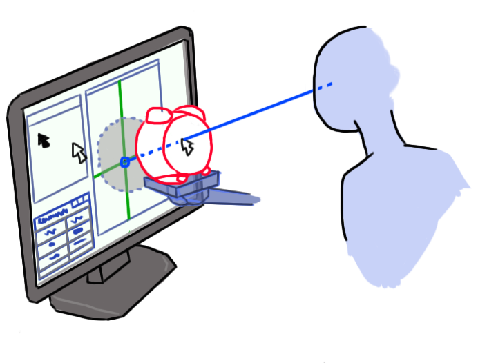
Pointing Technique
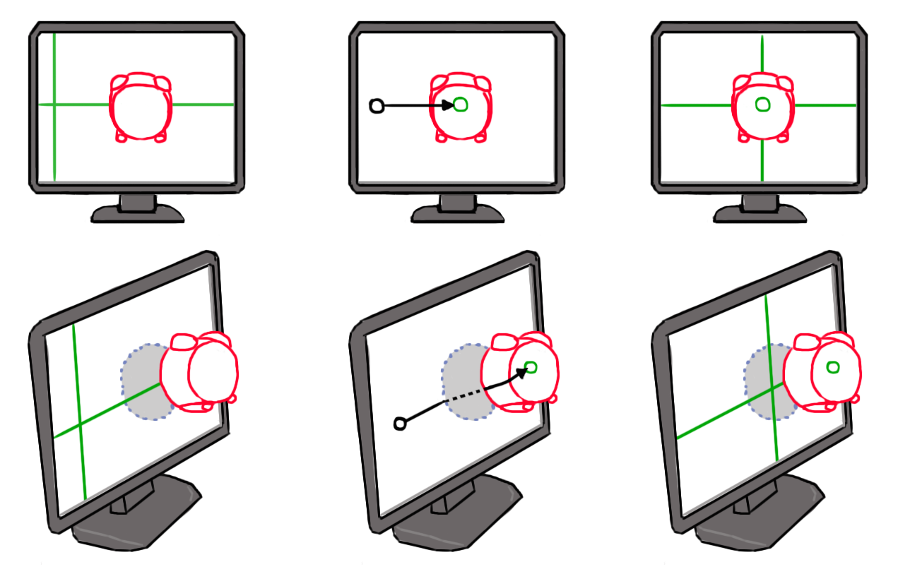
Design Space and Applications
Design Space
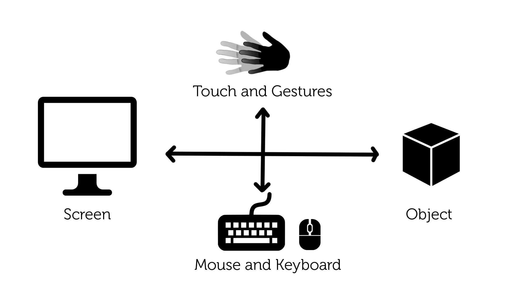
Hybrid Widgets
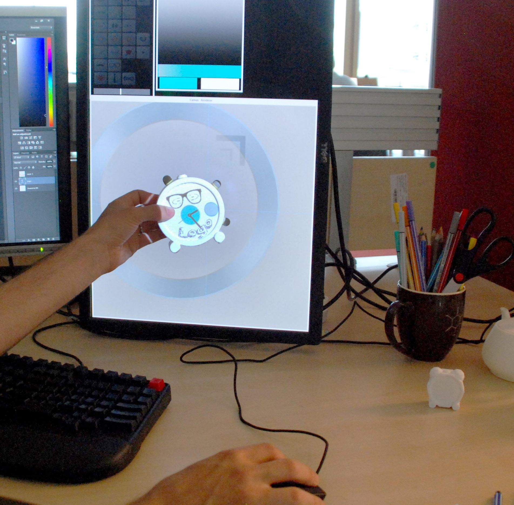
Painting / Programming
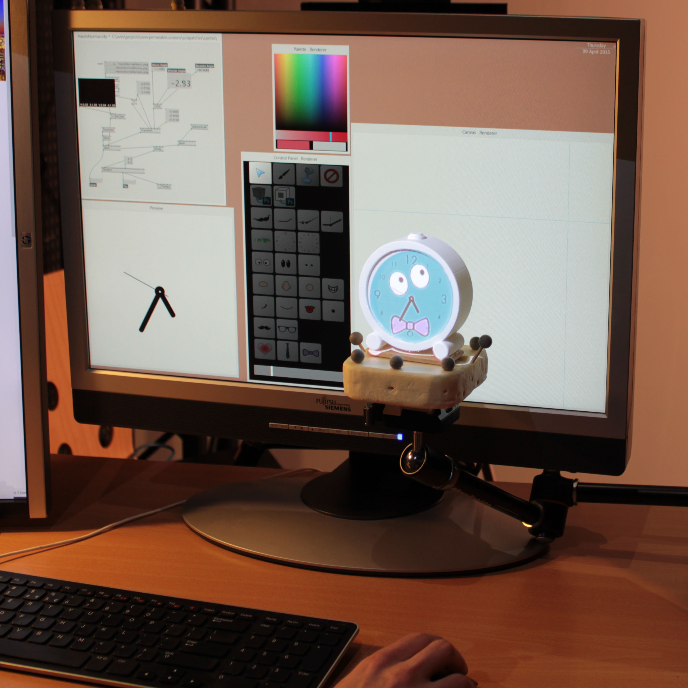
Text Annotations
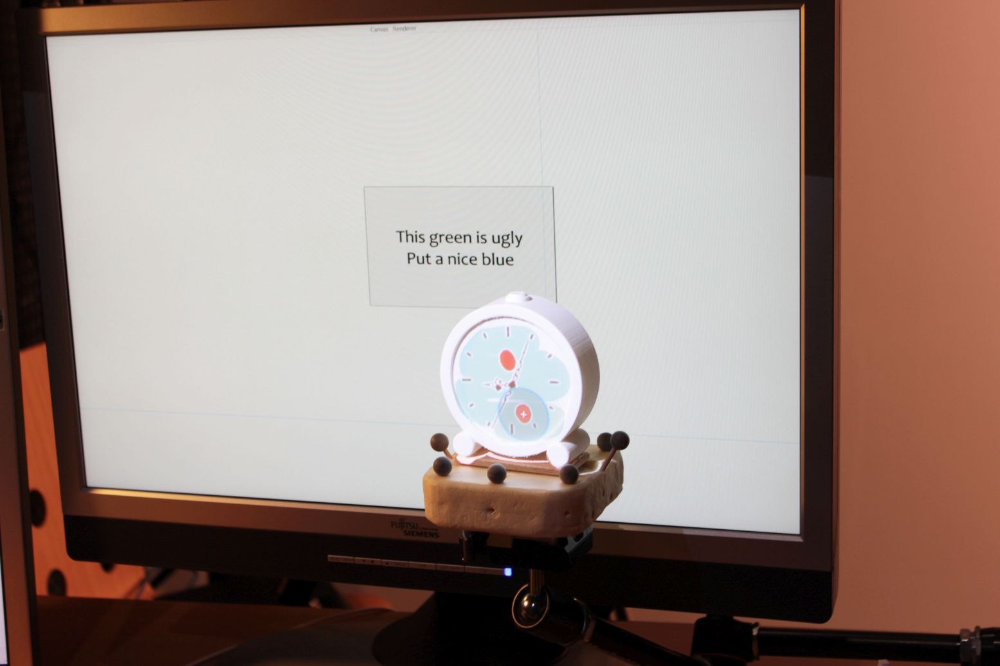
Complementary Representations
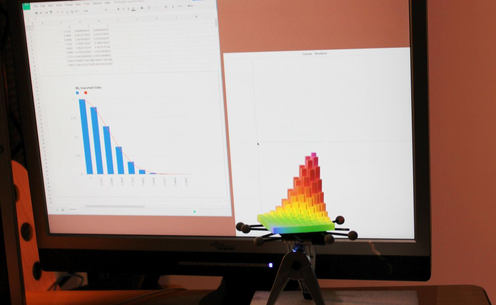
The Screen...
in the Environment
Moving towards the desk
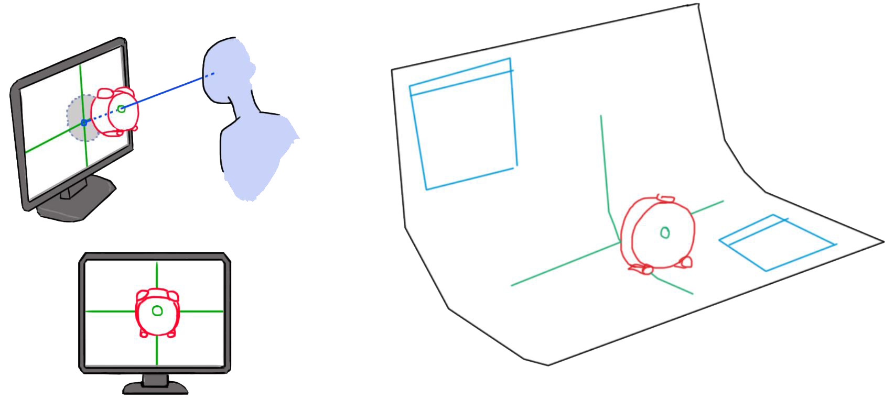
http://team.inria.fr/potioc/
 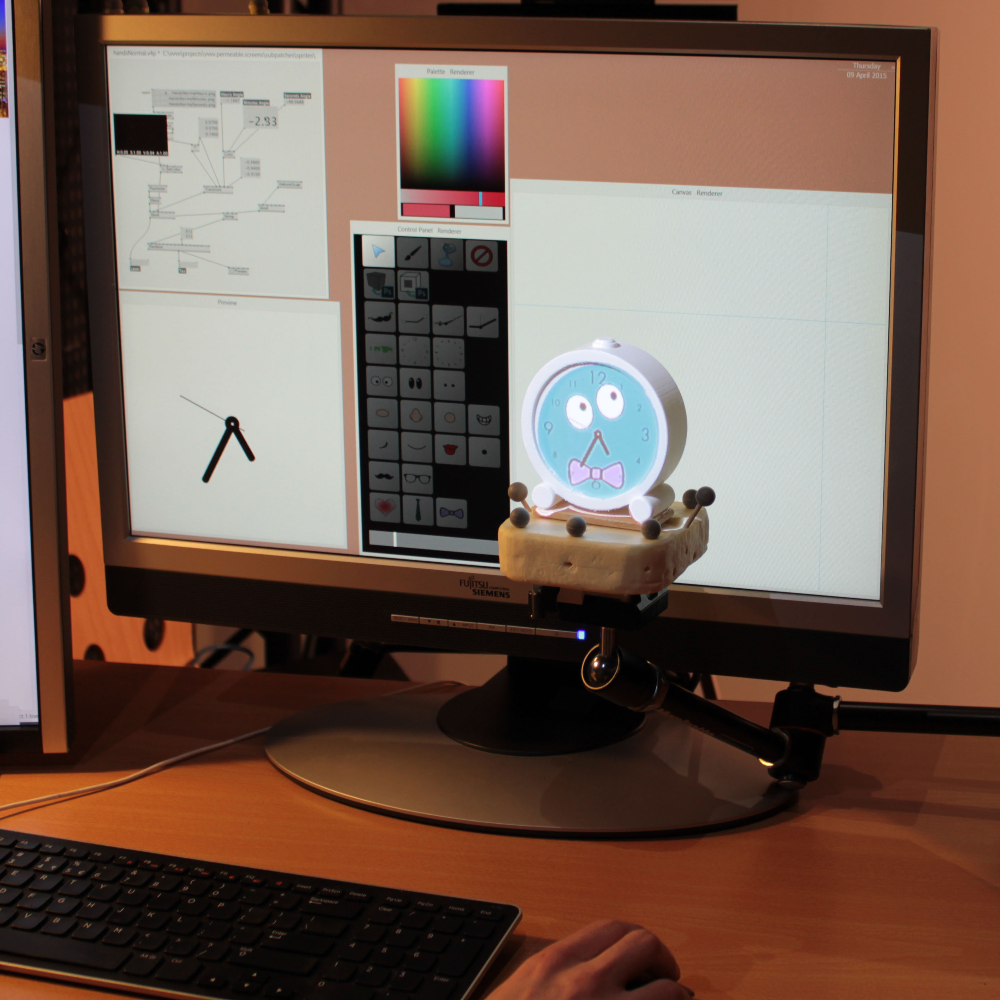
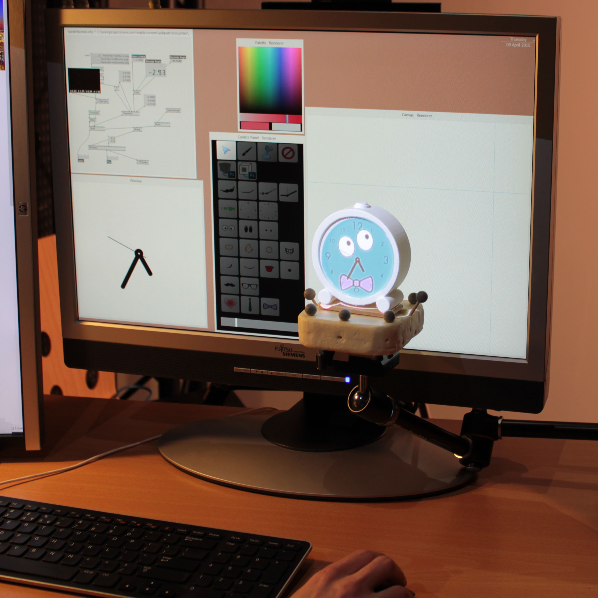
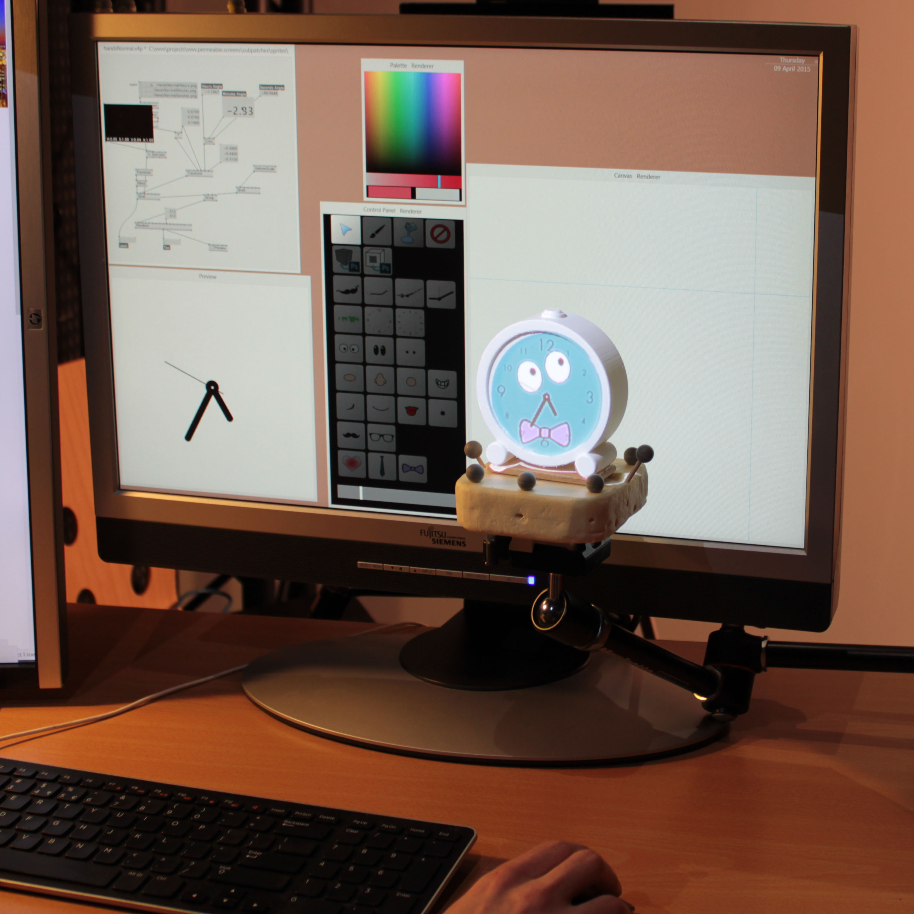
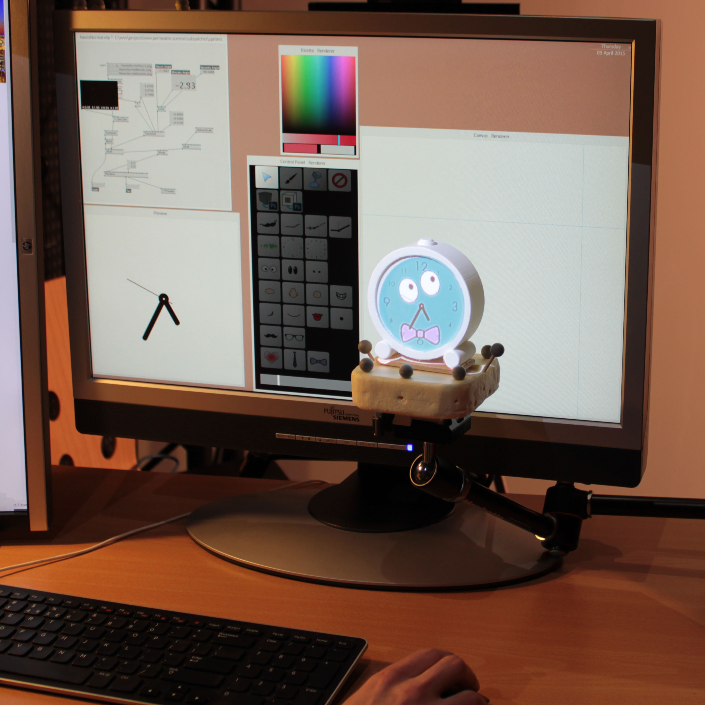